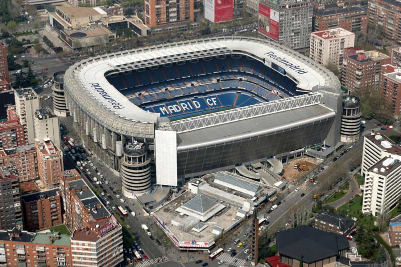
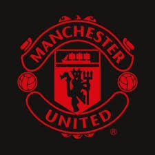
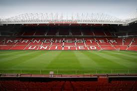
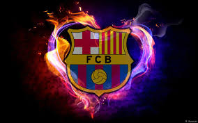
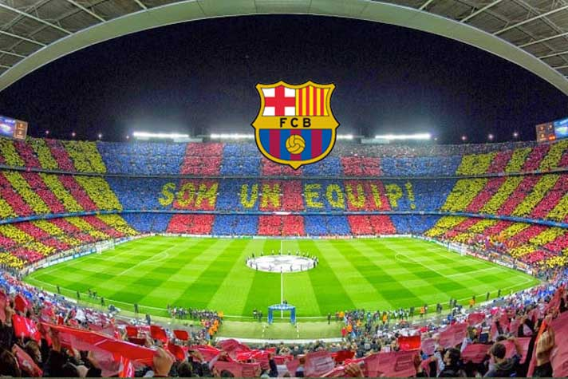

«Реа́л Мадри́д» — испанский профессиональный футбольный клуб из города Мадрид. Признан ФИФА лучшим футбольным клубом XX века. «Реал Мадрид» — один из трёх клубов, которые ни разу не покидали высший испанский дивизион, двумя другими являются «Барселона» и «Атлетик Бильбао».

Домашний стадион Реал Мадрида-Саньтяго Бернабеу
Лучшие матчи Реал Мадрида в истории клуба
Манчестер ЮнайтедТОП-2

В 2019 году «Манчестер Юнайтед» занимал третье место по доходам среди всех футбольных клубов мира[14]. В 2019 году Forbes оценивал клуб в 3,81 млрд долларов (3 млрд фунтов)[15]. Таким образом, «Манчестер Юнайтед» занимает шестое место в списке самых дорогостоящих спортивных клубов в мире и третье место в списке самых дорогостоящих футбольных клубов[16].
Соперники
Традиционными соперниками команды являются «Ливерпуль», «Лидс Юнайтед» и «Манчестер Сити», против которых разыгрываются северо-западное дерби, «дерби роз» и манчестерское дерби соответственно.

Легендарный Олд Траффорд
Лучшие матчи Манкунианцев в истории клуба
БарселонаТОП-3

«Барсело́на», известен также как «Ба́рса» — испанский профессиональный футбольный клуб из одноимённого города, самый титулованный клуб Испании и топ-5 чемпионатов.
Достижения
«Барселона» — самый титулованный клуб в Испании по общему количеству официальных трофеев — 75 титулов (26 — чемпионата Испании, 30 — Кубков Испании, 13 — Суперкубков Испании, 3 — Кубка Эвы Дуарте (предшественник Суперкубка Испании), 1 — Копа де Оро Аргентина (предшественник Суперкубка Испании), 2 — Кубка испанской лиги).
В 2009 году «Барселона» установила уникальное достижение, став единственным европейским клубом, который в течение года выиграл все возможные крупные турниры (три национальных — чемпионат, Кубок и Суперкубок Испании и три международных — Лига чемпионов, Суперкубок УЕФА и Клубный чемпионат мира). Кроме того, «сине-гранатовые» стали единственным испанским клубом в истории, которому удалось сделать «Золотой хет-трик» (чемпионат Испании, Кубок Испании, Лига чемпионов УЕФА). В 2013 году «Барселона» была признана самым дорогим клубом мира, основываясь на трансферной стоимости футболистов.

Космический Камп Ноу
Самые крутые матчи Барселоны последнего десятилетия